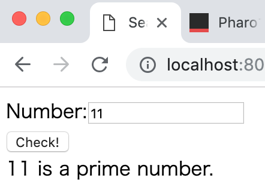

PharoでSeasideを動かす
以前SqueakでSeasideを動かそうとしたことがありましたが、途中でエラーが出て放り出したので、今回改めてPharoでSeasideを動かしてみました。
Seasideでアプリケーションを動かす
実装する内容として先日会社で素数チェッカがどうこうという話を聞いたのでそれでやってみようと思います。どこかにあるチェッカでは大きい数字のチェックができないというのに加えて実行時間がかかるとかいう話もあったので、Smalltalkならば、ということで勢いで動かす企画です。
Pharoを入手する
まずPharoを動かさないと始まらないので、ダウンロードしてきます。
https://pharo.org/
最初にPharo Launchcerが立ち上がるので、Pharo7(64bit)あたりを動かします。一度起動してしまえば、あとは普通のPharo環境でした。以降は別のバージョンのイメージを使うのでない限りLauncherは不要で、いつも通りにimageをvmに食わせて起動する感じの使い方ができそうです。
Seasideを入手する
次にPharo上でSeasideをアプリケーションサーバとして動かしたいのでそれを用意します。昔はもうちょっとインストールが面倒だった気がしましたが、今ならgithubから直接インストールできるようで一発で入ってしまいました。
http://www.seaside.st/
Metacello new
baseline:'Seaside3';
repository: 'github://SeasideSt/Seaside:master/repository';
load
ここまでで http://localhost:8080/ にアクセスすると、Seasideのトップページが開きます。
コンポーネントを追加する
ビューのクラスを追加します。ここでは PrimeCheckerView としました。
WAComponent subclass: #PrimeCheckerView
instanceVariableNames: 'number result'
classVariableNames: ''
package: 'Seaside-Sample'
作ったビューをurlとして参照できるようにします。
WAAdmin register: PrimeCheckerView asApplicationAt: 'prime'
これで http://localhost:8080/prime のURLができました。
あとは細かい実装をまとめて埋めていきます。
PrimeCheckerView>>number
^number.
PrimeCheckerView>>number: anInteger
number := anInteger.
PrimeCheckerView>>result
^result.
PrimeCheckerView>>check
result := number asString, (number isPrime
ifTrue: [ ' is a prime number.' ]
ifFalse: [ ' is not a prime number.' ])
PrimeCheckerView>>renderContentOn: html
html form: [
html text: 'Number:'.
html textInput
callback: [ :value | self number: value asInteger ];
value: (number ifNotNil: [ number asString ]).
html break.
html submitButton
callback: [ self check ];
value: 'Check!'.
html break.
result ifNotNil: [ html text: result ] ]
これでSeasideでアプリケーションを動かすところまでできました。

まとめ
あっという間にできてしまってちょっと拍子抜けですが、 renderContentOn: を細かく見ていくと時間がかかりそうです。
本来ならばこのあと、dockerでnginxを動かしてリバースプロキシするところもあるのですが、眠いので次回。